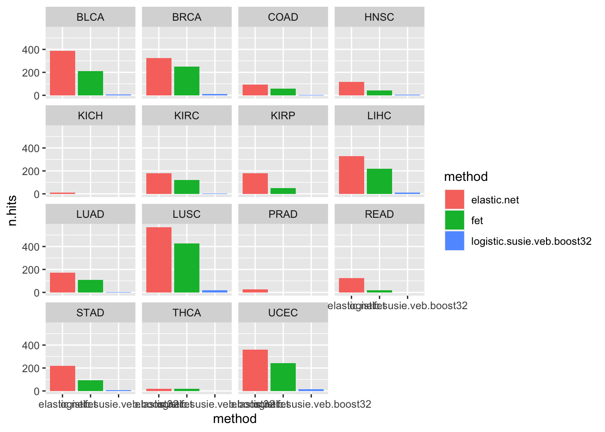
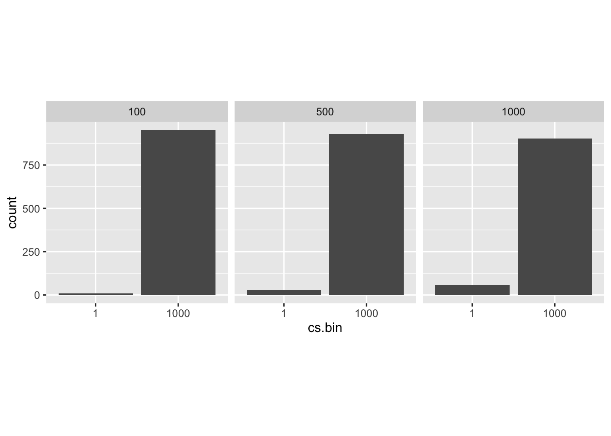

GSEA Method comparisons
karltayeb
2021-04-26
Last updated: 2021-05-19
Checks: 7 0
Knit directory: logistic_susie_gsea/
This reproducible R Markdown analysis was created with workflowr (version 1.6.2). The Checks tab describes the reproducibility checks that were applied when the results were created. The Past versions tab lists the development history.
Great! Since the R Markdown file has been committed to the Git repository, you know the exact version of the code that produced these results.
Great job! The global environment was empty. Objects defined in the global environment can affect the analysis in your R Markdown file in unknown ways. For reproduciblity it’s best to always run the code in an empty environment.
The command set.seed(20210205) was run prior to running the code in the R Markdown file. Setting a seed ensures that any results that rely on randomness, e.g. subsampling or permutations, are reproducible.
Great job! Recording the operating system, R version, and package versions is critical for reproducibility.
Nice! There were no cached chunks for this analysis, so you can be confident that you successfully produced the results during this run.
Great job! Using relative paths to the files within your workflowr project makes it easier to run your code on other machines.
Great! You are using Git for version control. Tracking code development and connecting the code version to the results is critical for reproducibility.
The results in this page were generated with repository version ff99bb3. See the Past versions tab to see a history of the changes made to the R Markdown and HTML files.
Note that you need to be careful to ensure that all relevant files for the analysis have been committed to Git prior to generating the results (you can use wflow_publish or wflow_git_commit). workflowr only checks the R Markdown file, but you know if there are other scripts or data files that it depends on. Below is the status of the Git repository when the results were generated:
Ignored files:
Ignored: .Rhistory
Ignored: .Rproj.user/
Ignored: analysis/GO_simulation_cache/
Ignored: analysis/figure/
Untracked files:
Untracked: GO_simulation_cache/
Untracked: _targets.R
Untracked: _targets/
Untracked: _targets2.R
Untracked: analysis/cache/
Untracked: analysis/initial_exploration.Rmd
Untracked: analysis/test.Rmd
Untracked: analysis/webgestaltr_list.Rmd
Untracked: cache/
Untracked: code/dream.targets.R
Untracked: code/fit.R
Untracked: code/gseabenchmark.targets.R
Untracked: code/logistic_susie.R
Untracked: code/plots.R
Untracked: code/score.R
Untracked: code/simulations.R
Untracked: code/utils.R
Untracked: code/webgestalt_example.R
Untracked: data/DREAM_modules/
Untracked: data/GO_Membership.RData
Untracked: data/WebGestalt/
Untracked: data/WebGestalt_cache/
Untracked: data/gene_list.txt
Untracked: data/webgestalt_example_genelist.txt
Untracked: output/WebGestalt/
Unstaged changes:
Modified: .Rprofile
Modified: .gitignore
Modified: analysis/GO_simulation.Rmd
Deleted: analysis/gsea_comparisons.Rmd
Note that any generated files, e.g. HTML, png, CSS, etc., are not included in this status report because it is ok for generated content to have uncommitted changes.
These are the previous versions of the repository in which changes were made to the R Markdown (analysis/gseabenchmarkR_relevance.Rmd) and HTML (docs/gseabenchmarkR_relevance.html) files. If you’ve configured a remote Git repository (see ?wflow_git_remote), click on the hyperlinks in the table below to view the files as they were in that past version.
| File | Version | Author | Date | Message |
|---|---|---|---|---|
| Rmd | ff99bb3 | karltayeb | 2021-05-19 | wflow_publish(“analysis/gseabenchmarkR_relevance.Rmd”) |
library(targets)
library(tidyverse)── Attaching packages ─────────────────────────────────────── tidyverse 1.3.1 ──✓ ggplot2 3.3.3 ✓ purrr 0.3.4
✓ tibble 3.1.1 ✓ dplyr 1.0.6
✓ tidyr 1.1.3 ✓ stringr 1.4.0
✓ readr 1.4.0 ✓ forcats 0.5.1# load and row_bind all targets matching a pattern
tar_agg <- function(pattern, selector=dplyr::matches){
load.env <- new.env()
tar_load(selector(pattern), envir = load.env)
result <- grep(pattern , names(load.env), value=TRUE)
result <- do.call("list", mget(result, envir = load.env))
result <- bind_rows(result)
}Overview
GSEABenchmarkR provides a “relevance score” functionality. For a bunch of microarray and RNA seq experiments they curate a list of gene set rankings. These rankings can be compared against a gene set ranking output from your favorite GSEA method. Good GSEA methods will have rankings that agree with the curated rankings. Additionally, we want good GSEA methods to report relevant gene sets at reasonable thresholds.
GSEABenchmarkR provides uniformly processed expression data from TCGA, and for each disease they provide “relevance scores” for gene sets in GO-BP, GO-MF, and KEGG. These relevance scores were derived from MalaCards. I’m not sure exactly how they were generated but they are supposed to serve as Silver standard to benchmark performance of GSEA methods.
Although in the paper they analyze 33 RNASeq datasets from TCGA, only there GSEABenchmarkeR::loadEData("tcga") only returns 15 data sets. We follow a vanilla DE pipeline outlined in the GSEABenchmarkR documentation, and then apply a suite of gene list based GSEA methods. Finally we use the MalaCards derived relevance scores to evaluate results.
result <- tar_agg('gseabenchmark.score', dplyr::starts_with)
result %>% mutate(rel = relevance/opt.relevance) %>%
filter(near(thresh, 0)) %>%
ggplot(aes(x=method, y = rel, fill=method)) +
geom_boxplot() + facet_wrap(vars(n_genes)) +
theme(aspect=1.0, axis.text.x=element_blank())We evaluate the relevance of elastic net, ORA, and logistic SuSiE when we use gene lists comprised of the top 100, 500, or 1000 DE genes for each of the 15 cancer datasets. Logistic SuSiE does better than the others, which indicates that the gene set ranking given by PIPs does a better job prioritizing relevant gene sets.
result %>% mutate(rel = relevance/opt.relevance) %>%
filter(thresh %in% c(0, 0.1, 0.9, 0.95)) %>%
ggplot(aes(x=method, y = rel, fill=method)) +
geom_boxplot() + facet_grid(vars(thresh), vars(n_genes)) +
theme(aspect=1.0, axis.text.x=element_blank())
Unfortunately, this does not mean that the relevant gene sets have particularly large PIPs. Here we threshold on PIP (or 1 - p for FET), we keep the top ranking gene-sets above the threshold. All gene sets below the threshold are given equal rank. The relevance score for logistic SuSiE drops off even with a modest threshold of 0.1. That is, none of the gene sets with PIPs > 0.1 are even listed among the relevant gene sets.
As we’ll see most of the components have very small credible sets, so the PIP threshold of 0.1 is not that stringent. Rather, this is telling us that the relevant gene sets have small but slightly elevated PIPs that we would not necessarily pick.
result <- tar_agg('gseabenchmark.cs', dplyr::starts_with)
r2 <- result %>% filter(near(target_coverage, 0.95)) %>%
select(method, n_genes, ID, cs_size) %>% unnest(cs_size) %>%
mutate(cs.bin = cut(cs_size, c(0, 1, 10, 100, 1000, 10000), labels = c(1, 10, 100, 1000, 10000)))
r2 %>% ggplot(aes(x=cs.bin)) + geom_bar() + facet_wrap(vars(n_genes)) + theme(aspect=1.0)r2$cs.bin[1][1] 10000
Levels: 1 10 100 1000 10000r2 %>% mutate(small.cs = (cs.bin %in% c(1, 10, 100))) %>% group_by(method, ID, n_genes) %>%
summarise(n.small.cs = sum(small.cs))%>%
ggplot(aes(x=n.small.cs)) + geom_histogram() + facet_wrap(vars(n_genes)) + theme(aspect=1.0)`summarise()` has grouped output by 'method', 'ID'. You can override using the `.groups` argument.`stat_bin()` using `bins = 30`. Pick better value with `binwidth`.
Defining small credible sets as 95% credible sets with fewer than 100 gene sets, we see that many for many cancer types, logistic SuSiE reports 0 small credible sets.
The situation is not improved by considering credible sets with lower coverage. For example, we can look at the 10% credible sets.
r2 <- result %>% filter(near(target_coverage, 0.1)) %>%
select(method, n_genes, ID, cs_size) %>% unnest(cs_size) %>%
mutate(cs.bin = cut(cs_size, c(0, 1, 10, 100, 1000, 10000), labels = c(1, 10, 100, 1000, 10000)))
r2 %>% ggplot(aes(x=cs.bin)) + geom_bar() + facet_wrap(vars(n_genes)) + theme(aspect=1.0)
r2 %>% mutate(small.cs = (cs.bin %in% c(1, 10, 100))) %>% group_by(method, ID, n_genes) %>%
summarise(n.small.cs = sum(small.cs))%>%
ggplot(aes(x=n.small.cs)) + geom_histogram() + facet_wrap(vars(n_genes)) + theme(aspect=1.0)`summarise()` has grouped output by 'method', 'ID'. You can override using the `.groups` argument.`stat_bin()` using `bins = 30`. Pick better value with `binwidth`.